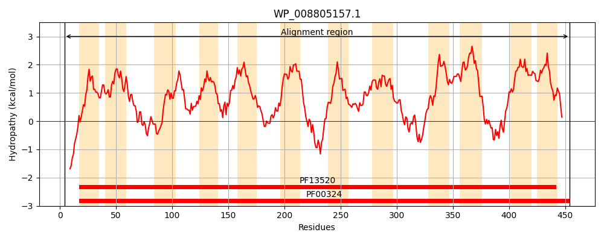
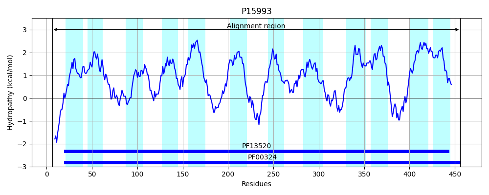
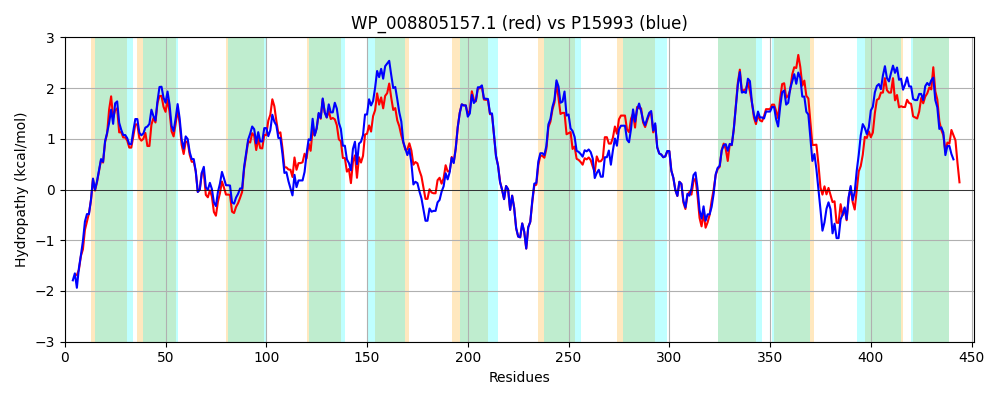

Hit Accession: P15993
Hit TCID: 2.A.3.1.3
Hit Description: gnl|BL_ORD_ID|9197 gnl|TC-DB|P15993|2.A.3.1.3 Aromatic amino acid transport protein aroP (General aromatic amino acid permease) - Escherichia coli.
Mach Len: 451
e:0.000000
Query TMS Count : 12
Hit TMS Count: 12
TMS-Overlap Score: 10.550000
Predicted Substrates:CHEBI:8089;phenylalanine, CHEBI:9769;tryptophan, CHEBI:9800;tyrosine
BLAST Alignment:
Score: 1762 , Bit scores: 683 bits, E-value: 0.0e+00, Alignment length: 451, Percentage identity: 73
Query: 4 QQEHQLKRGLKNRHIQLIALGGAVGTGLFLGIAQTIRMAGPSVLLGYAIAGAIAFFIMRQLGEMVVEEPVAGSFSHFANRYWGPFAGFMSGWNYWVLYVLVSMAELTAVGIYIQYWWPEVPAWLSAAIFFVAINAINLTNVKVYGELEFWFSIVKVAAIISMIAFGSYLLFSGHGGPAATVANLWQDGGFFPNGITGLVMAMAVIMFSFGGLELVGITAAEADEPHKTIPKATNQVIYRILLFYVGSLAVLLSLYPWRNVVEGGSPFVLIFHAIDSNIVANALNLVVLTAALSVYNSCVYCNSRMLFGLAQQGNAPRALLRVNRRGIPLTALAVSAVATALCVVINYVMPGKAFGLLMALVVAALVINWAMICITHLKFRRAMQRAGKVTAFQSLGYPLTNWLCLLFLAGILVVMYLTPDIRISVCLIPVWLLILAAGYLLRKKSAPALVA 454
Q QLKRGLKNRHIQLIALGGA+GTGLFLG A I+ AGP ++LGYAIAG IAF IMRQLGEMVVEEPVAGSFSHFA +YWG FAGF SGWNYWVLYVLV+MAELTAVG YIQ+W+PE+P W+SAA+FFV INAINLTNVKV+GE+EFWF+I+KV A+++MI FG +LLFSG+GGP ATV+NLW GGF P+G TGLVM MA+IMFSFGGLELVGITAAEAD P ++IPKATNQVIYRIL+FY+GSLAVLLSL PW V SPFVLIFH + VANALN+VVLTAALSVYNSCVYCNSRMLFGLAQQGNAP+AL V++RG+P+ + VSA+ TALCV+INY+ P AFGLLMALVV+ALVINWAMI + H+KFRRA Q G VT F +L YPL NW+CLLF+A +LV+M +TP + ISV LIPVWL++L GYL ++K+A A+ A
Sbjct: 6 QHGEQLKRGLKNRHIQLIALGGAIGTGLFLGSASVIQSAGPGIILGYAIAGFIAFLIMRQLGEMVVEEPVAGSFSHFAYKYWGSFAGFASGWNYWVLYVLVAMAELTAVGKYIQFWYPEIPTWVSAAVFFVVINAINLTNVKVFGEMEFWFAIIKVIAVVAMIIFGGWLLFSGNGGPQATVSNLWDQGGFLPHGFTGLVMMMAIIMFSFGGLELVGITAAEADNPEQSIPKATNQVIYRILIFYIGSLAVLLSLMPWTRVTADTSPFVLIFHELGDTFVANALNIVVLTAALSVYNSCVYCNSRMLFGLAQQGNAPKALASVDKRGVPVNTILVSALVTALCVLINYLAPESAFGLLMALVVSALVINWAMISLAHMKFRRAKQEQGVVTRFPALLYPLGNWICLLFMAAVLVIMLMTPGMAISVYLIPVWLIVLGIGYLFKEKTAKAVKA 456 | Protein Hydropathy Plots: |
|---|
|  |  |
Pairwise Alignment-Hydropathy Plot:
|
|---|
|  |